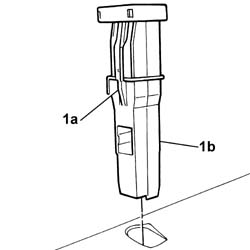
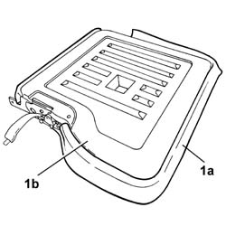
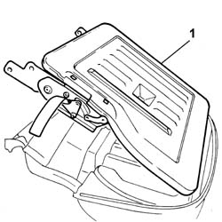

7050A53 Split, (two seater), BACKREST COVER - Replacement
- Path
- Procedures > 70 FITTINGS > 7050 REAR SEATS > 7050A rear seat assembly > 7050A53 Split, (two seater), BACKREST COVER - Replacement
- Kind
- repair procedure (removal / refitting; the operation number is the code)
- Applies to
- all engines; all production periods
- Interactive page
- https://sloeber94.github.io/elrnDB-fPnd/en/#/2753271
Applies to: all engines; all production periods
 Removing
Removing
 Refitting
Refitting1. Using a suitable tool, press the bush retaining tooth (1a) and remove both bushes (1b) pushing them upwards.

Applies to: all engines; all production periods
1. Using the knife, release the cover (1a) from the backrest frame (1b) along the entire perimeter.
 | Name | Country |
|---|---|---|
- | Scraper blade | 1.878.077.000 |

Applies to: all engines; all production periods
1. Remove the split rear seat backrest frame.

Applies to: all engines; all production periods
Refitting
RemovingFit the split rear seat backrest frame on the cover complete with upholstery.
Fit the edge of the cover on the perimeter of the frame.
Check that the fabric is taut and that there are no creases.
Fit the guide bushes for the head restraint positioning them in the housing in the frame.
Push them downwards until they are in contact with the actual backrest frame.
Check that they do not slip out of the housing when pulled.